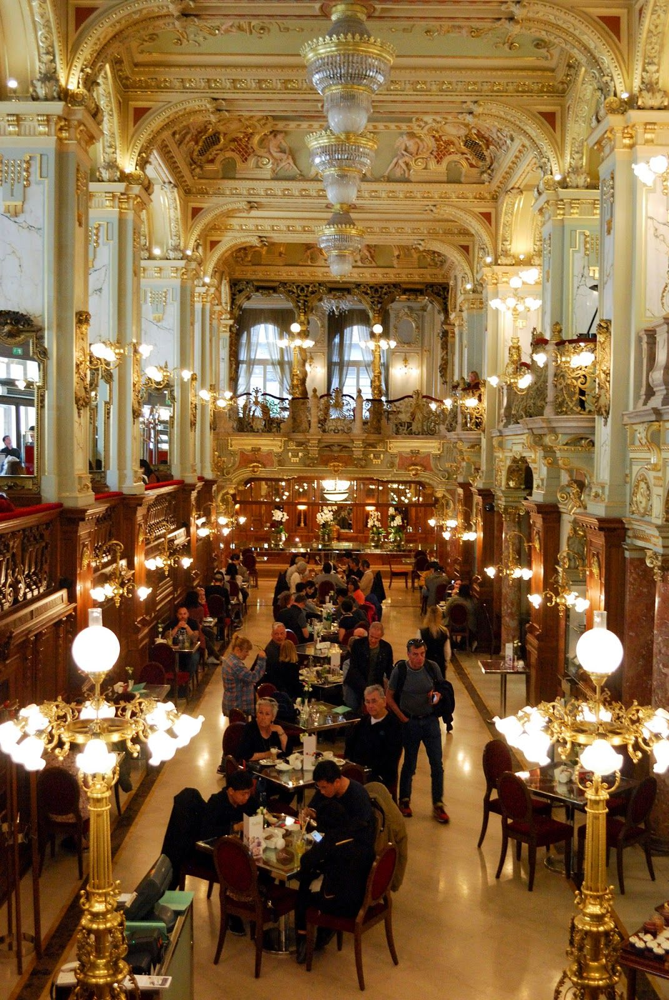
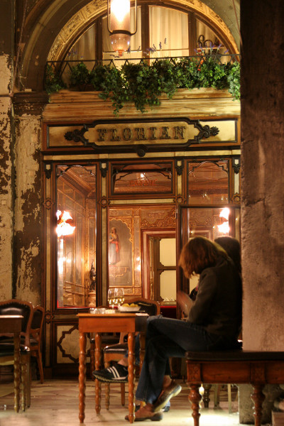

Best Cafés in the World
As travelers, we know the importance of visiting a great coffee shop. The ability to sit down for a tasty cup of coffee, chat with locals, and utilize the free Wifi is unmatched. Not to mention the cool coffee shop vibes!

CAFE NEW YORK,BUDAPEST
This Budapest legend was the meeting place of artists in the early 20th century.

Caffè Florian
It was established in 1720 and is the oldest coffee house in continuous operation in Italy .

Café Central
The café was opened in 1876, and in the late 19th century it became a key meeting place of the Viennese intellectual scene